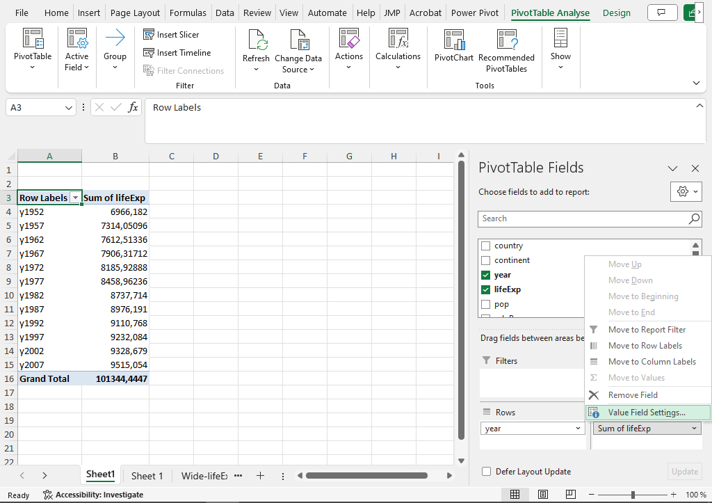
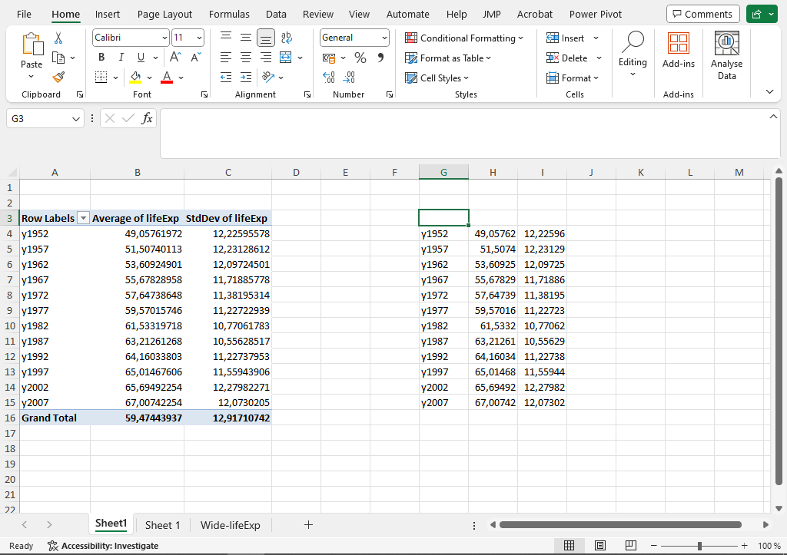
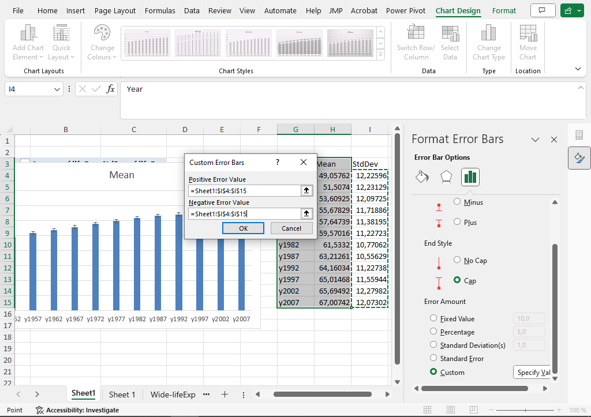
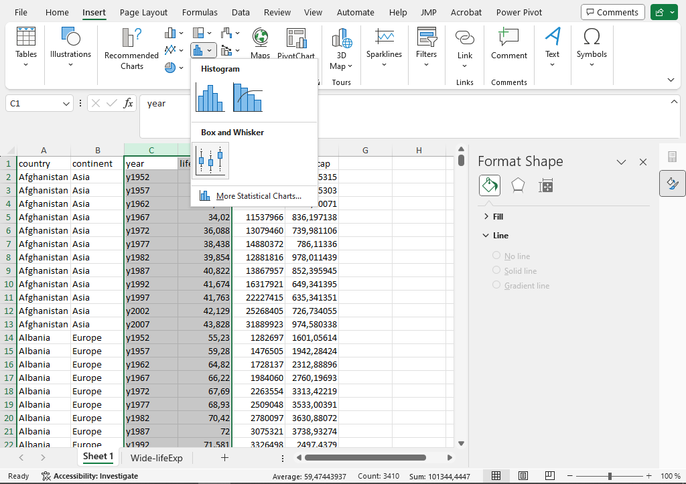
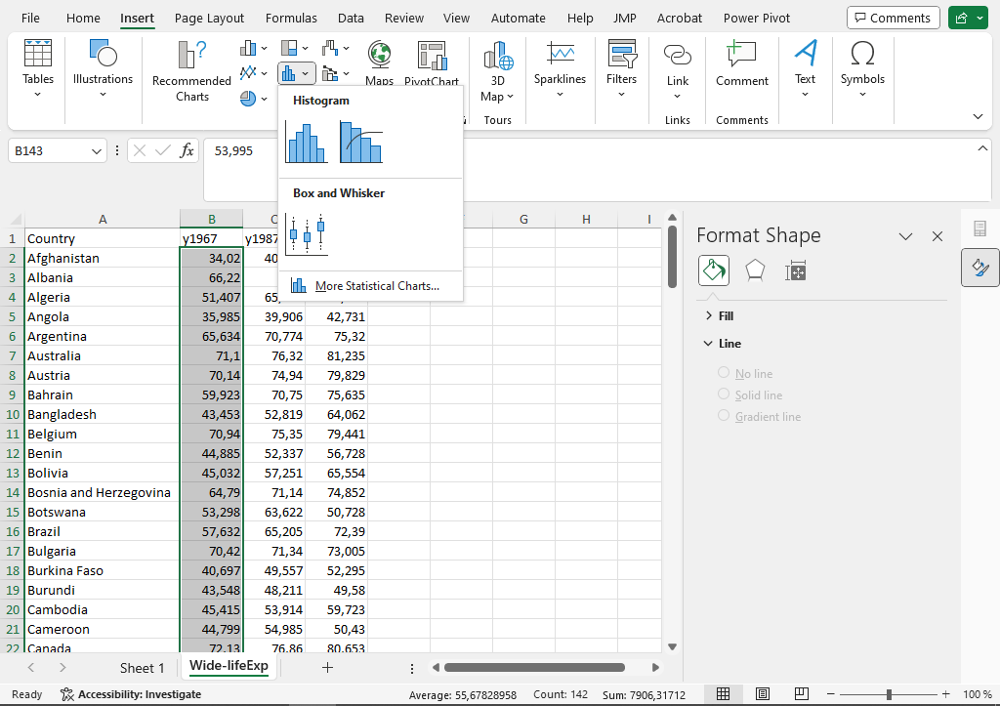
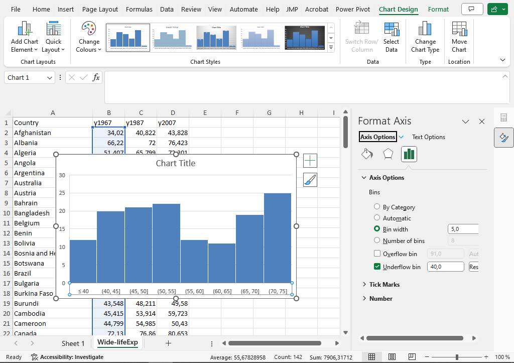
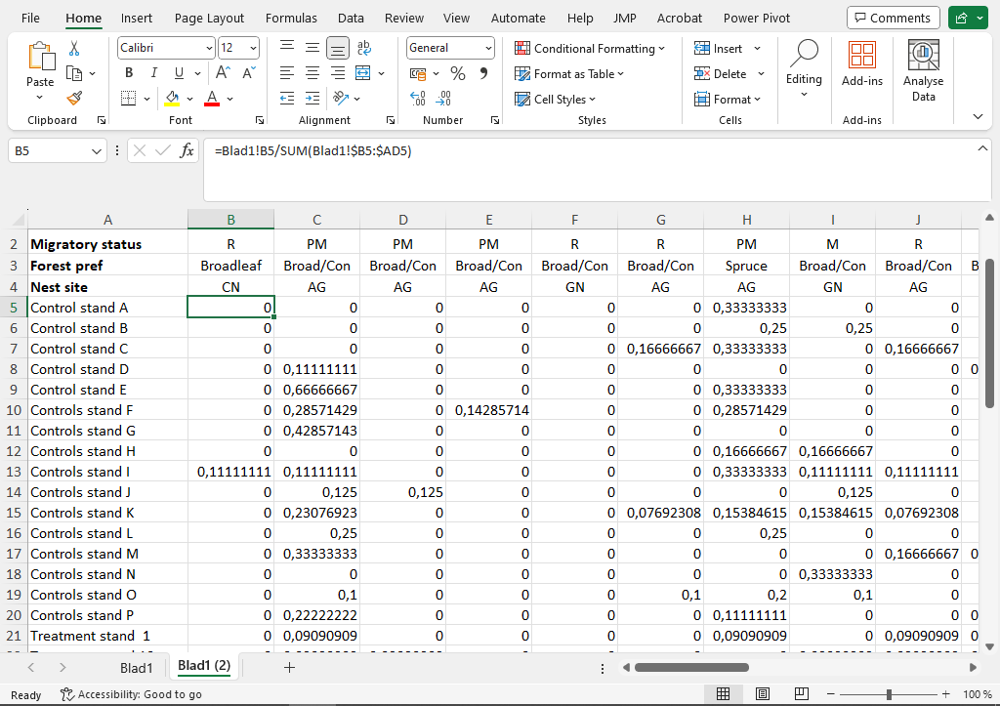
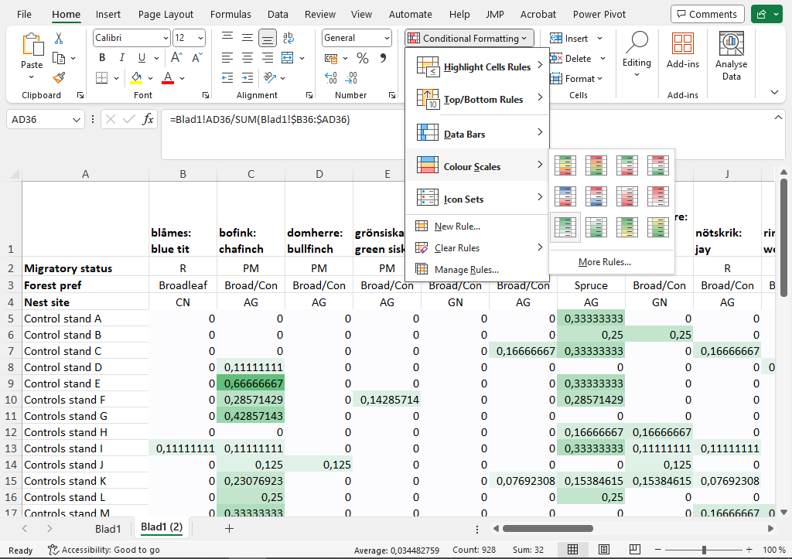
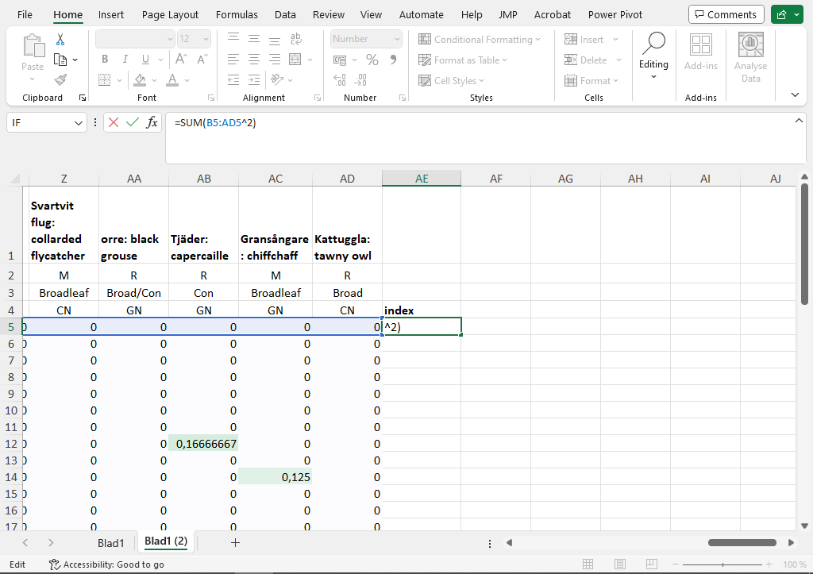
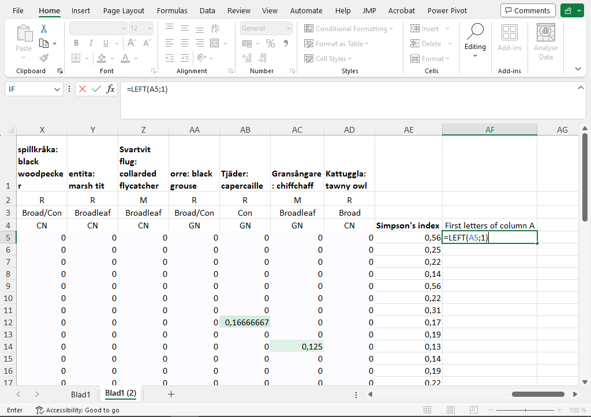

Statistics Exercise 2. Scientific graphs and ecological data
1 Introduction
In this exercise we turn toward more statistics-specific graphs and calculations. In the first part we look at three graphs which are common in scientific presentations: the bar chart with errorbars, the boxplot, and the histogram. In the second part we look at how ecological population data can be visualised as a heatmap (using cell formatting in Excel) and summarised and explained using a diversity index.
In the first part we work some example data on global socio-economics. The source is the Gapminder foundation. In the second part we work with some scientific data on bird species at different sites.
2 Scientific graphs
2.1 Barchart with errorbars
In the previous exercise we saw the humble barchart, where a summary measure like a mean is shown as the height of a bar for each of a few different groups. In scientific publications the barchart is almost always developed using an errorbar which shows the dispersion in the distribution measured with a standard deviation or the precision of the mean estimate measured with a standard error.
The first step is to calculate mean values and standard deviations. We will do this for each year in the Gapminder data using a pivot table.
- In the Gapminder.xlsx file, click anywhere in the data (such as
A1). Then go to the Insert ribbon and select PivotTable. The dialog window should say that the input data is the full dataset and that the pivot table is printed in a new sheet. Click OK to produce an empty table. - The new window should have the pivot table field to the right. Drag the variable year to Rows and liveExp to Values. The default is to calculate the sum, but this can be changed to the mean by clicking the small arrow next to Sum of lifeExp, selecting Value Field Settings, and then taking Average in the list of functions.

- In a similar way we can add the standard deviation to the table. Drag lifeExp from the list of variables to Values. Go to Value Field Settings and select StdDev for the standard deviation.
- It is possible to create a bar chart using a PivotChart, but since we need to add an errorbar we will use a trick to use a standard graph. The trick is to create a parallell non-pivot table be referencing the pivot table. Click an empty cell such as
G4and link the first data cell in the pivot table by writing the formula=A4. Auto-fill that cell to the right for each column and down for each row (except for the Grand Total). Give this new table suitable headers (Year, Mean and SD).

- Create the bar chart by marking the columns with Year and Mean, then going to the Insert ribbon and selecting the graph icon for a barchart.
- Errorbars can now be added by clicking the green plus to right right of the graph, clicking the arrow by Error Bars and selecting More Options. In the margin window which now appears select Custom and Specify values at the very bottom. In the dialog window remove the text and select the values in the column SD. Do the same for both Positive and Negative. Click OK.

2.2 Boxplot
A boxplot visualises the distribution of data as a box with whiskers. The box splits the observations into four groups: the lowest quarter of values is below the box; the second lowest is in the box but under the middle bar; the second highest quarter is in the box above the bar; and the highest quarter is above the box. It is also possible to visualise extreme values as dot and to add a marker for the mean value.
In modern Excel versions it is very easy to create a boxplot. Here we create a boxplot for life expectancy over time.
- In the sheet with all data, mark the columns for year and lifeExp. Go to the Insert ribbon and find the small graph icon for Statistic Chart (typically in the middle row and middle column of icons). Select Box and Whisker to create a boxplot.

2.3 Histogram
A histogram shows the distribution of a variable by dividing the x-axis into intervals (bins) and letting bars show the number of observations in each interval. We illustrate this using some wide data in the sheet Wide-lifeExp.
- Select the column with observations from 1967. Go to the Insert ribbon and find the graph icon for Statistic Chart. Select Histogram.

- The resulting histogram has automatically selected intervals on the x-axis. To change these, click anywhere in the x-axis. In the window to the right, find the icon with three bars and the section with Axis options. Set the bin width to a suitable value (for example 5) and set the value in Underflow bin to a value which is larger than the lowest value in the data.

3 Ecological data
3.1 Ecological population data
We will now look at some real-world ecological data from a study at the Southern Swedish Forest Research Center. The file Bird data.xlsx contains observation numbers for different bird species. Each column is a species and each row is a site. It is natural that we want to compare the distribution of species between sites, but since some sites will have larger number overall, an initial step is to transform the observations from counts to proportion by dividing by the site total.
- Copy the data sheet by right-clicking the sheet name at the bottom and selecting Move or Copy.
- In the new sheet click the first data observation in
B5. For each cell we want to take the cell value and divide it by the sum total, which here is the sum of the row. We can do this for the first cellB5with the formula=BLAD1!B5 / SUM(BLAD1!B5:BLAD1!AD5). Note that the sheet name followed by!indicates a different sheet than the current one.

- If we want to autofill this cell downwards and to the right we have to be a bit careful with which cells should be absolute (i.e. fixed with
$) and which should be relative. When we autofill to the right, we want the numerator cell to change, but the we want the columns to be absolute in the denominatorSUM(). Also, when we autofill down, we want the rows to always change. The formula should therefore be=BLAD1!B5 / SUM(BLAD1!B$5:BLAD1!AD$5). Autofill that formula to get proportions for each site.
Cells in Excel can be formatted for individual fonts, color background, font color and many other aspect. Here we use this to make the data sheet into a heatmap.
- Mark the data cells in
B5toAD36. Go to the Home ribbon and find the icon for Conditional Formatting. Go to Color Scales and pick any color scheme. The result is that each cell has a color indicating the magnitude of the proportion. If one wants to change the width of columns one can drag the black line between column headers (in the grey area with letters). One can zoom out using the slider at the bottom right.

The heatmap can be really useful to get an idea of patterns in the data, for example which species are more common and if there are differences between the two groups of sites (treatment and control sites).
3.2 Diversity indices
It is common to reduce the data from multiple variables (one per species) to a single variable. This can be done using diversity indices. There are a few different types of indices. Here we look at Simpson’s index, which is the sum of squared proportions.
- Go to the first empty column
AE. We want to calculate the sum of squared proportions for each site. A square is written as^2in Excel, for example=4^2for the square of four. Here we want to square the data then sum it. This can be done with=SUM(B5:AD5^2), then autofilling down for each row.

- Add a Conditional Formatting to the index column. Is there any indication of difference between treatment and control sites?
- The diversity index can be illustrated with a boxplot. In order to do this we want one column which specifies the type of site and the numerical column of index values. In the first column we have an indicator of site type, but there is a unique identifier, so it cannot be used directly in a graph. Look into using the function
LEFTto extract the first letter of the first column. Then construct a boxplot showing each of the two site types. The easiest way to construct a boxplot is to have the numerical columns to the right of the categorical column; one quick way to do that is to copy the numerical column and paste it to the right.

LEFT function to extract the first letter from the column with site id.4 Geographical data
We finish with a quick look at geographical data and the 3D map feature in Excel. On Canvas you should find the Excel file Two-butterflies.xlsx. It contains a data extract from iNaturalist. It has been prepared in Excel by changing the decimals in the coordinates to commas, and by removing information about the observers.
- Find and open the file. How is the data structured? What are the observational units and the variables?
- Go to the Insert ribbon and click the 3D Map button. This should open a window with a map of the planet. Excel should automatically plot the points based on the column names latitude and longitude.
- Under the setting for Category (in the field to the right), click Add field and select scientific_name. 20. The type of graph can be changed with the button under Data and the size of the marker can be changed under Layer options at the bottom.
An alternative is of course to do a scatterplot with latitude and longitude as x and y variables.